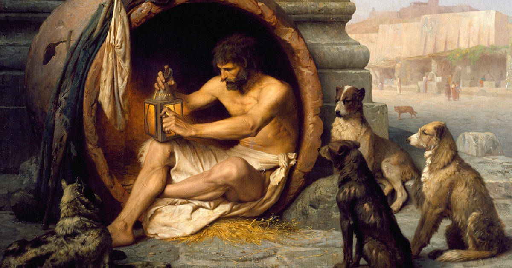

Cínicos
La diferencia
"... y que como los perros,
unas veces movían el rabo
y otras veces mordían."

El sabio cínico considera que para alcanzar la felicidad es necesario la libertad, la autosuficiencia y el desapego. Los cínicos no estaban dispuestos a conceder que la felicidad dependiera de cuestiones ajenas a sí mismos, la libertad está en el centro de la forma de pensar cínica y se refiere a la libertad de acción y a la libertad de expresión.
Una parte importante de la tradición cínica se ha transmitido en forma de anécdotas (chreia), lo cual no es de extrañar considerando cierta aversión por la escritura de algunos de sus miembros, y la importancia de las "performances" o acciones públicas características de los cínicos. Hay varias colecciones de estas anécdotas, algunas de las cuales fueron recopiladas por Diogenes Laercio en su libro.
Las acciones más representativas son las atribuidas a Diógenes, tales como masturbarse o defecar en público, mear encima de alguien, escupir a la gente o hablar en favor del incesto y del canibalismo. Sin embargo todos estos hechos solo tienen validez porque son actos deliberados de protesta contra las costumbres sociales y morales y porque los cínicos primitivos creían que era una forma de enseñanza realizada.
Las acciones
La teoría cínica proviene de la práctica y su fundamento se encuentra en la exigencia de libertad frente a todo aquello que pueda esclavizarle. Como parte de esta libertad radical se encuentra la libertad de palabra (parrhesia).
Esta libertad de expresión es un rechazo de la polis y de la autoridad, porque va directamente contra sus propias normas, asumiendo la posibilidad de recibir severos castigos, incluso el exilio. La libertad de palabra utilizaba formas que habitualmente llegaban a ser ofensivas.
Junto con la libertad de palabra, otra característica del cínico es su desvergüenza (anaideia). Aceptaban el apodo de perros porque lo tomaban precisamente como el símbolo de su falta de vergüenza. Como parte de esta desvergüenza asumían el desprecio por las convenciones y el placer.
El cínico adopta un estilo de vida que representa su independencia y proclama la necesidad de autosuficiencia (autarkeia) para conseguirla. Pero para lograr esta autosuficiencia es preciso vivir de una manera sencilla, con deseos que puedan ser satisfechos fácilmente y con las únicas pertenencias que uno pudiera "salvar en caso de naufragio".
Los cínicos concedían un gran valor a la austeridad y a la frugalidad y en esto se asemejaban a los estoicos. Otra cuestión fundamental para el cinismo era la práctica de ejercicio físico, porque la disciplina (askesis) le fortifica frente a las adversidades imprevistas y aumenta su resistencia a vivir en la intemperie. Acostumbrarse a cuidar de sí mismos, sin criados, seguir dietas sencillas y vestir un simple manto y un bastón.
Los cínicos proponen también una vida conforme a la naturaleza, tomando a los animales como ejemplo de autosuficiencia. Los animales tienen pocas necesidades y se adaptan rápidamente a la situación en que se encuentran. Diógenes vivía en la polis, como si fuera un perro, con un comportamiento escandaloso para un ser humano, aunque no todos los cínicos llevaron el compromiso a tales extremos.
La imperturbabilidad (apatheia) es el ideal del sabio cínico, que vive alejado de todo lo que le produce perturbación o angustia y es capaz de adaptarse con indiferencia a las circunstancias. Y por último el cosmopolitismo cínico, que está relacionado con la libertad de no pertenecer a ningún país, ni estar obligado por las leyes, porque son regionales y lo que vale en un sitio no vale en otros. También está relacionado con la oposición a la polis, porque la naturaleza no tiene fronteras ni leyes.
El paso del tiempo
Con el paso del tiempo el comportamiento y la vida provocativa de los primeros cínicos fue dando paso a un escándalo verbal y escrito. Teoría y práctica están inseparablemente unidas en el cinismo, pero la importancia de una y otra no es la misma, se dejarán a un lado el manto y el bastón, y lo que queda es la escritura pero no la vida cínica.
<- Atrás